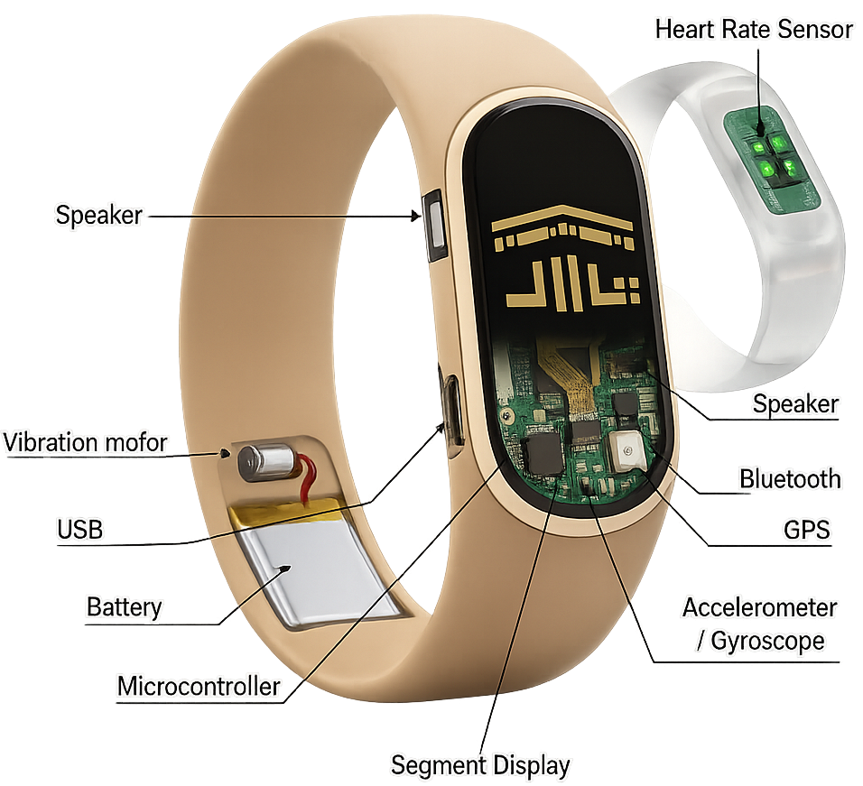

The Prototype
A smart wristband & app for pilgrims

The Wristband
Smart Hajj wristband & app for safer pilgrimages
Every Hajj season brings over two million pilgrims into crowded holy sites, where losing track of Tawaf or Sa'i rounds or finding help can be challenging. Yusr is a smart wristband paired with a mobile app that uses AI-powered motion sensing to automatically count rituals and includes an SOS button that instantly shares the pilgrim's live location with emergency contacts.
The companion app also guides pilgrims to nearby exits, restrooms, and meeting points. Yusr was developed as a complete entrepreneurship project, simulating the journey of building a startup from market research and MVP development to business modeling, marketing strategy, and financial planning.
Auto-counts rituals so pilgrims stay focused.
One press shares live location with responders instantly.
Guides pilgrims to exits and meeting points.
Keeps families connected in large crowds.
Flags early signs of exhaustion or heat stress.
Supports Arabic, Urdu, and English.
| Capability | Nusuk App | Pilgrim App | Yusr |
|---|---|---|---|
| Wearable Device | |||
| Auto Ritual Counter | |||
| Emergency SOS | |||
| Voice Commands | |||
| Gate Status |
Comparison of Available Features (2026)
Put it on and pair it with the app
Every Tawaf and Sa'i round counted live
One press triggers an instant alert
Contacts get the live location instantly
Validated the problem by studying pilgrim needs and existing competitors.
Built the first wristband and app prototype: counting, SOS, and navigation.
Defined customer segments, channels, and revenue for a seasonal product.
Built channels to reach pilgrims and organizers with a clear message.
Modeled costs and returns to test if Yusr could become a real startup.
A smart wristband & app for pilgrims

The Wristband
Full multi-day ritual cycle on one charge
Sweat, splash, and dust resistant
Built for extreme Hajj-season heat
GPS accuracy with site beacon support
Explore the live prototype to see the landing page and product concept firsthand
Yusr.app